This scan
from Google Books is much more readable than the first link
above but has not been OCRed. https://www.extractpdf.com/ and MacOS
Preview was used to extract the images.
My intent is to improve the readability of the original text on a wide
variety of devices by transcribing to HTML.
I read through the text, attempting to correct any OCR errors. The
book was set in a type face with fairly narrow vertical strokes. This
somethjimes led to OCR errors.
My intent is only to fix OCR errors. Original editing mistages, like
the the occurrance of "of of" on page number 9, for example, were not
corrected.
Mark Nahabedian
Cambridge Massachusetts
2025
s/supplv/supply/
There are a number of places where the OCR process failed to insert a
space between two words that have a line break between them in the
printed book.
In the phrase "operating the cornering stool above" on page 22, the
"s" in "stool" is believed to be a typo as the caption on page 21 says
"Cornering Tool". A google search "for lathe cornering stool" just
produced results for turning the legs of stools. Though a seaarch for
"lathe cornering tool" didn't yield any exact matches, there were
plenty of hits for a variety of tools for the lathe.
A
^°-
o-
-V k Jen //&? * *t> « *
* •• • ,/ . V'^V" .„ V
A> ... Ch
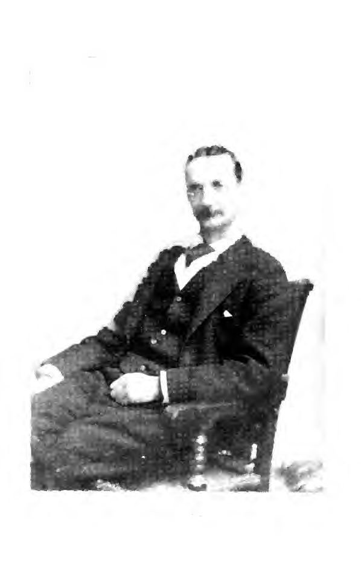
D. H. CHURCH.
THE EVOLUTION AUTOMATIC MACHINERYAS APPLIED TO THE MANlirftCTURE OF WATCH IIS AT WALTHAM, MASS., BY THE RMEBICflN WALTHAN WATCH COMPANY
By E. A. MARSH
WITH HALF-TONE ILLUSTBATIorLS.
CHICAGO:
Geo. K. Hazlitt & Co., Publishers.
1896.
V.
TWO COPIES RECEIVED,
Office o f th« JAN? 6 1900
Register of Copyright*.
54224
Copyrighted by Geo. K. Hazlitt & Co.
I S. >( i.
SECOND COPY,
PREEACE.
An apology, to possess its highest value to all parties
concerned, ought to be both prompt and unsolicited. The writer of the
following" pages desires, therefore, to apologize in advance for the
short-comings and imperfections which may be found in this briel
review of some oj the steps of mechanical progress in the manufacture
oi watches on the American System. The work of preparing this brief
history was performed in connection with the every-day factory duties
of the writer and. therefore, subject to frequent interruptions and
delays. It was not expected that it would be embodied in any more
permanent form than in the columns of the monthly trade journal for
which it was written.
E. A. MARSH.
Waltham, Mass., February, 1896.
INTRODUCTION.
As mankind develop in intelligence and culture, their wants become
more numerous and varied and their requirements more exacting. The
supply of one want but briefly anticipates the creation of a new
one. which in turn demands satisfaction, so that the great and growing
business of the world seems to be to supply its various wants. To a
certain extent this supply business possesses the nature of a barter,
in that it is an exchange of commodities, not always a direct
exchange, indeed, it seldom is so simple a matter as that, yet in an
indirect way all business as such is simply a channel through which
the multitudinous wants of mankind find their supply. As the great
majority of people have certain wants in common, the matter of
providing an adequate supply becomes very important, and calls for
special means or agencies through which to work, so that it follows
that the better the means of supply the cheaper can be the supply
obtained and the want satisfied. So that it is by no means an
indication of laziness or indolence in an individual if he uses his
brains in devising an easier, or
78INTRODUCTION.
quicker, or cheaper, or better method of performing his work. On the
contrary, it will in many or in most cases prove quite the contrary
fact.
It is one of the inherent conditions of human nature, especially of
physical nature, that it is susceptible to fatigue. It is also a fact
that a condition of weariness is not conducive to the attainment of
the highest results, either in quantity or quality of work
produced. If one of the qualities demanded in any certain kind of work
be the highest attainable degree of uniformity, it will be readily
admitted that the individual workmen, with the certainty of constantly
recurring periods of fatigue, which make imperative corresponding
periods of rest, is at a great disadvantage when in competition with
an impersonal and tireless machine which is capable of producing work
of a like kind. The man gets tired, or nervous, or is not feeling
well, or is inattentive, or careless and indifferent. The machine has
no such weaknesses, and though its work is not held up to the standard
quality by any domination of its own conscience, yet its mechanical
functions are so invariably exercised that its product of work will
surpass that of its humancompetitor, not alone in quantity, but in
exact uniformity as well. How much better then is a man than a
machine? Within certain limits the machine is the
INTRODUCTION.9
better, for the reasons already stated. Still, the powers or
capabilities of the machine are limited to a very narrow compass,
i. e.. it can perform the particular duty for which it was made,
whereas the man, the human machine, is capable of adaptation to the
performance of of a great variety of duties. But within the field of
its capacity the properly designed and well made machine will
outstrip the man. Especially will this fact be apparent in the
production of articles which from their nature demand the exercise of
special skill and unremitting care and attention in their
fabrication. Work of such nature calls for a great degree of nervous
strain on the individual engaged in producing it. The expenditure of
nervous energy entails fatigue, which in turn reduces the ability to
exercise the needful skill or to concentrate the operator's attention,
and a lessened quantity and inferior quality of product results.
If it is desired to produce large numbers of articles which shall be
substantially alike, and which are composed of a variety of parts, it
is evident that economy in production will be best secured by a
subdivision of the labor, by which large numbers of similar parts
shall be produced bv the same workman. It is also evident that if the
large number of required pieces whose function is the same, can be
made with dimensions exactly uniform.
IOINTRODUCTION.
there will result a great reduction in cost of manufacture because of
the avoidance of any individual or special fit- ting of the various
parts.
Such a system of manufacture has within the last fifty years come into
very general adoption in all extensive concerns, and from what has
been said, it will be evident that its success must depend upon the
adoption of machines, and the comparatively small amount of individual
skill demanded. So far as is known to the writer, the most complete
and comprehensive system of manufacturing on the interchangeable
system, in its earlier years, was introduced by the United States
Government for the manufacture of army muskets, at the United States
Armory at Springfield, Mass. Credit for a large share of the
mechanical excellence of that system, and for the invention of many of
the ingenious machines then and still in use for that work, belongs to
the then master mechanic at the armory, Cyrus Buckland. One of the
interested students and great admirers of that ingenious mechanism in
those early days was a young Boston watchmaker named Dennison. who was
convinced that by the construction of suitable machines it would be
not only possible but entirely practicable to manufacture the delicate
mechanism of the pocket watch on the interchangeable system; and
feeling that such a scheme was
INTRODUCTION.
11
feasible and might be made to yield a good manufacturing profit, he
endeavored to establish a watch factory, to be conducted on that
system of manufacturing". After years of delay he succeeded in
organizing a company and in beginning the work of preparation. As his
plan was to substitute machinery for skilled labor to a large degree,
it was of course needful to design and build the special machines
required. The field was new: experi- ence could afford little
assistance; money was by no means plentiful, and it was therefore
needful to proceed with caution, so that expensive mistakes might be
avoided. It was. moreover, an uncertain matter as to the magnitude of
the business to be done, assuming that the new manufacturing system
should prove successful. It is no detraction from the ability or the
ingenuity of the original mechanics of the watch factory that they did
not at that early date attempt the use of elaborate and complicated
machines, such as we now have in use. Such an attempt at that time
might indeed have given evidence of inventive or mechanical ability,
but it would also have been an indication of poor business judgment,
and would have been a waste of the little money then available. Large
capital is an absolute necessity in the manufacture and employment of
automatic watch machinery to any general extent, and in this branch of
12INTRODUCTION.
business, as well as in almost all others, the larger concerns possess
this great advantage over their smaller competitors.
If it were possible, it would be interesting to review the various
forms of machines which have successively been used in watch making on
the American svstem; which system, as has been suggested, consists in
makinglarge numbers of pieces of exactly uniform dimensions, so that
they may be used interchangeably. As the onlv practical means of such
manufacture, the system proposed and demanded special machines for the
perform- ance of the work, not only for the sake of economy, but also
to do away with necessity for special skill in the individual
workman. Such a review is. however, impossible. Most of the discarded
or displaced machines have been destroyed. But of those which remain
wemay make a brief study, sufficient we trust to note the direction
and path of progress in the evolution of the more complicated and
costly machines now in use.
14
EVOLUTION Or AUTOMATIC MACHINEPV.CHAPTER I.
In the review of machinery employed in watch making, it will be both
natural and proper to consider, in the first place, the machines
employed in the production of the plates. Of course the great bulk of
the work on the plates is in the nature of turning, which involves the
use of special chucks, and to a certain extent, of special lathes
also. By the death of the late Ambrose Webster. the writer is
deprived of an authority in certain matters of historical nature, for
Mr. Webster was, during some of the early years of the Waltham
factory, immediately engaged in the making of tools and machinery, and
was well informed as to the origin of some of the foundation devices
which have been universally adopted in American watch factories, and
which by their evident value have also commended themselves to the
attention of manufacturers in other lines. One of those primary
devices, and perhaps the most important, is that of the "draw-in
chuck," so called from the method of its
1314EVOLUTION OF AUTOMATIC MACHINERY.
operation, it being caused to grasp the enclosed object by being drawn
into the tapering mouth of the lathe spindle. It is also known as the
''split chuck," from the form of its construction. Probably the oldest
formof such chuck is found in the "Aiken's awl," (Fig. i) which is
still in use in the hollow awl handle, rilled ^b>> 'WB with an
assortment of awls % m ;£y ^k if- and other simple tools. This awl
handle is constructed with a sleeve or socket, the mouth of which is
bevelled or tapered, and the inner end tapped with a screwthread. The
chuck, at its inner end, is threaded, while its outer end is bevelled
to correspond with the socket which receives it. Theprojecting part is
made square, to fit an accompanyingwrench, and the chuck being split
nearly to the inner end, forms two jaws which grasp the tool as the
chuckis screwed in. It is not now known whether in originally adapting
this chuck to watchmaking lathes, the projecting squared portion was
retained, though it is believed that it was so retained for a time,
but was
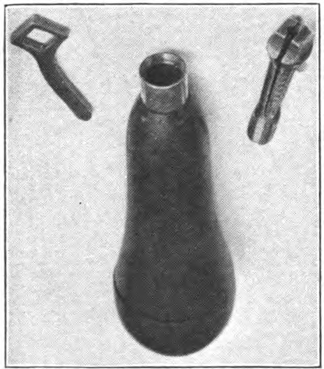
Fig. 1
EVOLUTION OF AUTOMATIC MACHINERY.15
succeeded by a solid rod or screw which extended through the axis of
the lathe spindle and was operated by some sort of wrench applied to
its outer end. This form of construction naturally suggested the use
of a permanent handle, i. e.. the "hand wheel" which is now in
universal use. Still later the solid rod was succeeded by a hollow
one, and the form of the closing chuck modified, until there was
evolved the springchuck and draw-in spindle, as now used in all
watchmaker's lathes. Credit for the latter stage of improvement
doubtless belongs to Mr. C. S. Moseley, who introduced it while the
original of the Waltham watch factory was located in Roxbury, Mass.
Without doubt the early form of this split (or spring) chuck was used
for holding wire, or small pieces of cylindrical form, but later the
outer end of the chuck was enlarged, so as to hold the round discs of
brass used for plates and wheels. But for holding work to be turned on
its face, and which it was desired to duplicate or multiply in large
numbers, and of exact and uniform thickness, the "draw-in chuck"
possessed an inherent imperfection. If, in operating upon a succession
of pieces, which it was desired to have of uniform thickness, one
piece should be a little larger than another, the chuck could not be
drawn into the taper mouth of
16EVOLUTION OF AUTOMATIC MACHINERY.
the spindle to the extent which the smaller pieces would allow,
consequently the larger pieces would be turned thinner than the
smaller ones. A similar effect would be produced by unduly straining
the draw-in spindle. To overcome this inherent fault, some one
(probably Moseley). very ingeniously modified the construction of the
lathe so that the chuck should be held stationary, as to any
lengthwise motion, and the closing of the chuck be effected by the
endwise movement of the outside spindle. This form of construction,
although varied in some particulars, has been in almost universal use
in all watch factories for about thirty years or more, and will
doubtless continue. This form of lathe is known as the "three
bearing," or more properly, "the slide spindle lathe." (Fig. 2.)
In 1873. Mr. C. V. Woerd designed and patented a modified form of
"slide spindle lathe," which was nominally a two-bearing lathe,
the third bearing being obtained by making a long telescope fit of the
draw-in spindle in the rear end of the running spindle. With very nice
fitting, such a lathe would run fairly well for a time, but it never
was a satisfactory form of construction, and was abandoned. In the
view of this lathe, as shown (Fig. 3), it will be observed that it is
made to close the chuck without the use of the "hand-wheel,"
EVOLUTION OF AUTOMATIC MACHINERY.17
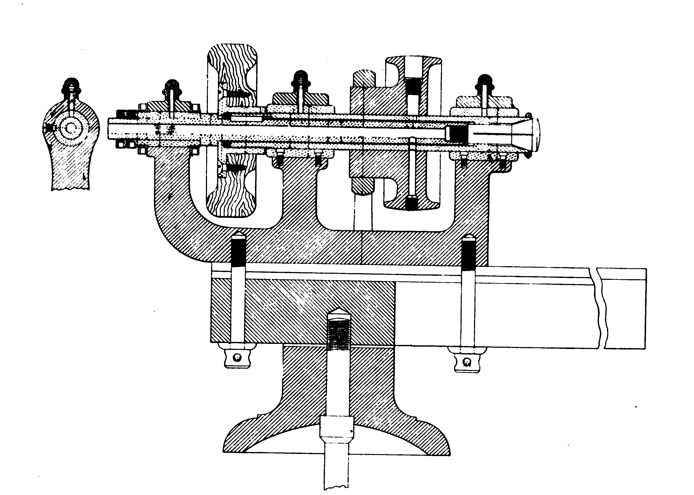
Fig. 2. - Three Bearing Spingle Lathe.
18EVOLUTION OF AUTOMATIC MACHINERY.
the closing being performed by the action of a stiff spiral spring,
mounted on the draw-in spindle, while the opening was done by means of
a foot lever connected
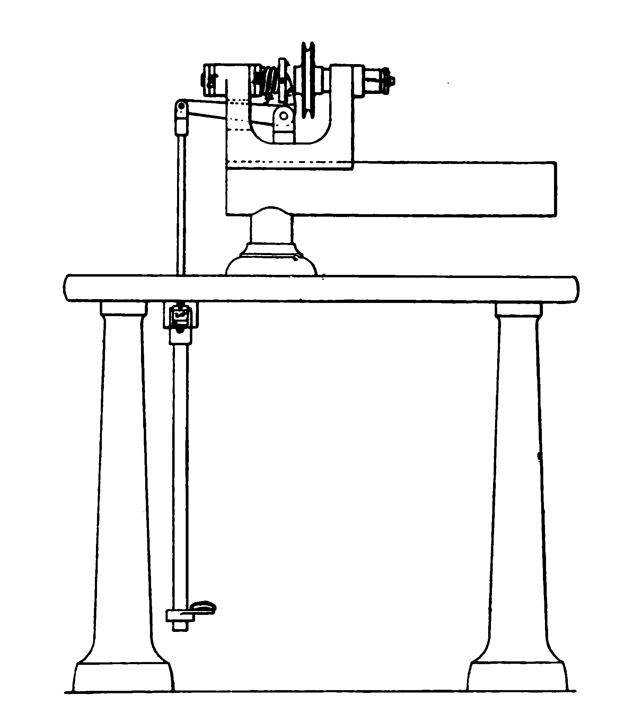
Fig. 3. - Woerd's Two-Bearing Slide Spindle Lathe
with the forked bell crank lever attached to the lathe head. While
this was not the original form of self-closing lathe, (as springs had
for many years been used to operate the draw-in spindle of small
lathes for very light
EVOLUTION OF AUTOMATIC MACHINERY.19
work). yet it was an advance toward a better form of self-closing
lathe (Fig. 4). which has. by successive steps, reached a form of
construction so useful as to be extensively employed, largely for the
reason of its adaptability to automatic operation, and, from that
fact, being peculiarly fitted to be incorporated in the more
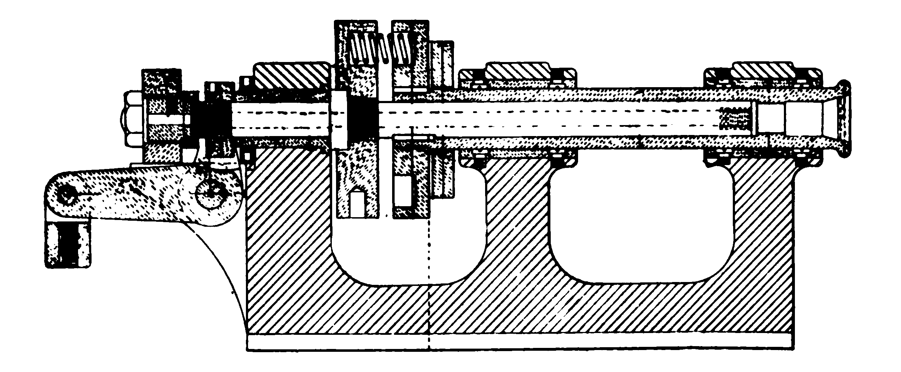
Fig. 4. - Self-Closing, Three-Bearing Slide Spindle Lathe.
complex forms of machinery which are made automatic throughout.
Having thus briefly sketched the growth of the chuck and the lathe, we
reach the point of their joint operation in the manufacture of watch
plates. It was the early method in this factory to employ the slide
spindle lathe, above described, with hand wheel for closing and
opening the chuck for holding the plates, in conjunction with the
common form of slide rest with the two slides, each
20EVOLUTION OF AUTOMATIC MACHINERY.
movable by screws turned by the two hands of the operator. Later the
hand wheel was succeeded by the self-closing form of lathe, the
opening of the chuckbeing performed by a combination of levers
operated by foot. Then came the substitution of levers in place of the
feed screws for manipulating the slide rest. Still later came an
attachment to the lathe head for operating another tool, which served
to round or bevel the edge of the plate after being faced by the slide
rest tools.
A story is told of a young musical student who claimed that he could
write a musical composition which should be correct, and yet be beyond
the ability of his teacher to play. As his teacher expressed doubts as
to the young student's ability in that direction, he was requested to
submit his composition for trial. On laying it before his teacher for
him to play on the piano forte, there seemed to be nothing unusually
difficult, until he came to a passage which demanded the use of the
two hands at near the extremities of the kevboard,while there was call
for a note to be struck on one of the keys near the center. Of course
the professor stopped, with the exclamation that "such a passagecould
not possibly be played by any one." But the youth assured the master
that it was not only possible
EVOLUTION OF AUTOMATIC MACHINERY21
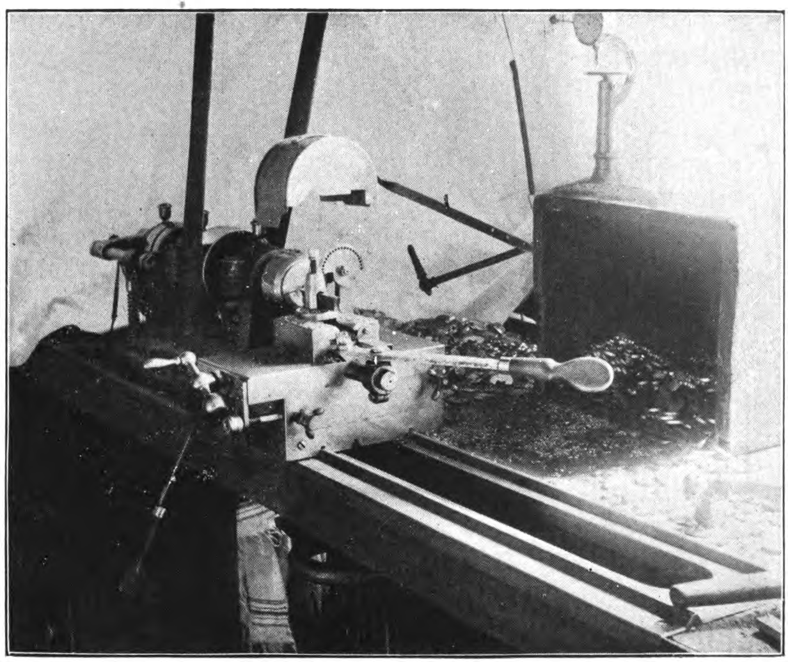
Fig. 5. - Plate Turning Lathe, with Double Lever Slide
Rest and Cornering Tool.
22EVOLUTION OF AUTOMATIC MACHINERY.
of execution, but was by no means difficult, and seating himself at
the instrument, he began the composition, and when he reached the
peculiar passage he bowed his head and struck the required key with his
nose. In the case of this plate-turning lathe, the operator's
two hands are engaged in manipulating the slide rest, and his two feet
in stopping and starting the lathe, and opening the chuck. As a means
of operating the cornering stool above mentioned, the knee of the
operator is brought into service with perfect success.
It is obvious that a person could attend to but one of lathe of the
kind described, and that the watch plate would require a large
succession of turnings, each of which would require a special chuck,
consequently a very large number of lathes would be demanded, beside
the consumption of much time in changing chucks and adjusting the
tools.
Within two years, however, Mr. D. H. Church has constructed two
machines for plate turning, which mark a new departure in that
direction, the novelty being in their adaptation to the performance of
a number of turnings, equivalent to a number of machines and
operators. The first of these machines is designed for turning the
recesses in pillar plates, such as are shown in the accompanying
illustration (Fig. 6), which shows the train side
EVOLUTION OF AUTOMATIC MACHINERY.23
of a 16-size plate, with recesses turned for the barrel, the escape
wheel, the pallets, the balance, and the bearing for the intermediate
setting wheel, also a small recess for the center pinion. The blank
plates, having been faced on both sides, and having the diameter
turned, and the dial feet holes made, are placed in a tube at the left
hand end of the machine, whence, they are taken, one at a time, by a
swinging carrier arm, and are placed in the chuck of the first running
spindle. By the action of a cam on a shaft below and parallel with
the running spindle, which is at rest, one of the slides of the
compound tool carriage is moved toward the work, which carries the
turning tool into operative position, and the chuck spindle being at
the same time set in motion, the tool commences its work of cutting
the recess, beginning at its outer edge. When the tool has cut to the
proper depth, another cam comes into action, and the tool is moved
across the work, turning toward the center of revolution. If a slight
boss is desired at the center of
Fig 6. Sixteen size Pillar Plate, showing six recesses made
by Automatic Machine.
24EVOLUTION OF AUTOMATIC MACHINERY.
the recess, the tool is withdrawn at the proper time and distance, and
when the recess is complete the turning tool is automatically drawn
back and returned to its original position, which allows room for a
second carrier to swing over into position to receive the recessed
plate. By this time the revolution of the chuck spindle has ceased,
and this second carrier moves up into contact with the plate, and as
it recedes again it carries the plate with it, and swinging over, it
moves up and deposits it in the chuck of the second spindle, but in
such position that the succeeding recess will be made in its proper
location on the watch plate. Another and suitable tool is now brought
into action in a similar manner to the first, and when its work is
completed it retires, and a third carrier takes the plate and places
it in another chuck. In the meantime the two preceeding chucks have
received new plates, and so the work progresses simultaneously, six
recesess being made successively in as many plates, each unlike all
the others in size, position and form.
The last carrier in the series deposits the recessed plate in a tube
at the extreme right hand end of the the machine, By a change in
chucks, etc., the turnings on the dial side of the plate can be made
in a similar manner. The boldness in the conception of this
EVOLUTION OF AUTOMATIC MACHINERY.25
Fig. 7. Automatic Pillar Plate Receiving Machine.
26>EVOLUTION OF AUTOMATIC MACHINERY.
machine (Fig. 7) will be appreciated when it is realized that the
watch plate must be placed in each succeeding chuck in a different
position, and that it is required to be placed on three pins which fit
in the three dial feet holes.
Another form of plate turning machine is designed for turning recesses
in top plates, which are held in self-closing chucks, instead of being
placed on pins as is the case with pillar plates. This machine, which
is shown in the accompanying view, (Fig. 8) is exceedingly novel in
its movements, especially in the action of the transfer carriers,
which instead of swinging over, like those on the pillar plate
machine, are made to swing around. This form of motion involves the
necessity for an additional movement in a vertical direction to clear
the tool carriage. In this case, as in the other, the blank plates are
taken from a tube, where they have been placed by the attendant, and
placed in the chuck, and are also delivered in another tube when
completed. Another difference in action consists in the movement of
the work toward the tool, instead of the tool toward the work. But the
most novel and curious action is that of the transfer carrier. As this
arm swings around, its ordinary effect would be to reverse the watch
plate so that it would be placed in the succeeding chuck with
EVOLUTION* OF AUTOMATIC MACHINERY.27
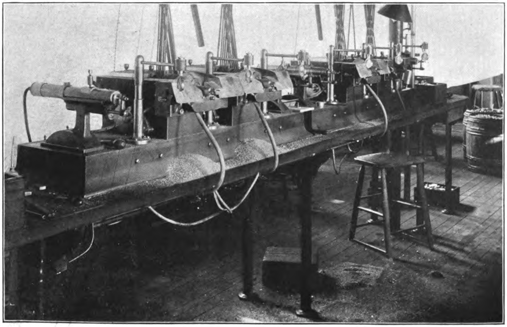
Fig. 8. - Automatic Plate Receiving and Facing Machine.
28EVOLUTION OF AUTOMATIC MACHINERY.
the opposite face presented to the cutting tool. In some cases that
change would be desired, but where it is desired to make the
successive recesses on the same side, the carrier reverses the plate
during its transfer, so that it is placed in the second chuck with the
same
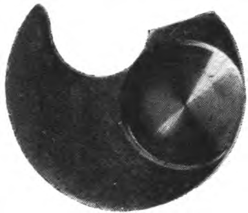
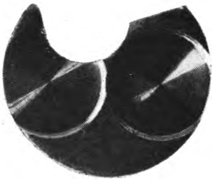
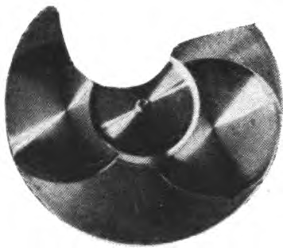
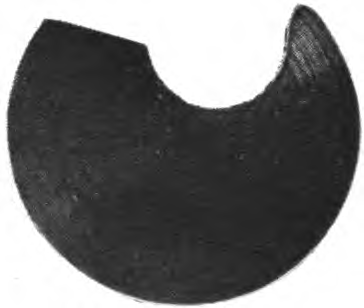
Fig. 9. - Showing Recessing and Facing of Top Plates.
side out, but with the center of revolution at what ever point
desired. The accompanying illustration, (Fig. 9) shows the several
recesses and the facing of both sides of plates.
CHAPTER II.
It should be understood that this work is not intended to describe the
manufacture of watches, for that would require volumes, but to briefly
note some of the steps in the evolution of special machines, which
characterize the "American system" of watchmaking. It must be
understood that only a few of the more prominent machines can be
considered, and that only a general description of those can be given.
Having briefly considerd the turning of the plates, we will defer, for
a time, any mention of other operations on that part of the watch
movement, and review the successive forms of the machines for turning
the various arbors, staffs and pinions, which constitute some of
the moving parts of the watch.
The history of the American Waltham Watch Factory does not extend back
to that indefinite period when power was obtained by means of the foot
wheel, and the turning tool was simply a graver held in the hand of
theoperator; but only to the time of the lathe and slide-rest, whose
feed-screw was operated by hand. For a time, the turning of all staffs
and arbors was performed in this
2930EVOLUTION OF AUTOMATIC MACHINERY.
way. But this method was succeeded by a form of semi-automatic turning
lathe, the exact form of which the writer is unable to
learn. Succeeding this, came an improved form of lathe, in which the
tool was caused to move with a uniform speed and to a desired distance
Fig. 10.— Moseley-Webster Staff Turning Lathe.
and then automatically withdrawn from contact with the work and
returned to the point of starting. The accompanying illustration,
(Fig. 10), shows one of the oldest form of lathes used in this
factory, which can be found (and unfortunately minus one of its
spindles). It will be observed that at the left hand end of the
EVOLUTION OF AUTOMATIC MACHINERY.31
machine there is a combination of levers, designed to provide for
turnings of various lengths without necessitating a change of feed
cams. It is the understanding of the writer that the combination levers
were designed by Mr. Ambrose Webster, while the invention of the lathe
should be credited to Mr. Chas. S. Moseley.
The next illustration (Fig. 11). shows a later form ofautomatic staff
turning lathe, which embodies substantially
the same principle of mechanism as the earlier machine, but
differently arranged, and of much heavier construction. The cam shaft,
at the back of the machine, is driven bv a worm and worm-gear, not
32EVOLUTION OF AUTOMATIC MACHINERY.
shown. At the extreme left hand end of this shaft is shown the feed
cam, the acting face of which gives motion to a rack lever, which
indirectly communicates motion (endwise) to the tool carrying spindle,
one end of which is seen projecting through the end of the
machine. The opposite end of this spindle enters the projecting
cylinder at the right hand side of the machine, which cylinder
contains a spiral spring, which serves to carry the spindle in the
reverse direction to that imparted by the feed cam. About midway of
the length of this spindle is attached the tool holder, which is
compound in its construction, to allow for the desired elevation of
the turning tool, and also to provide a means of moving the tool at a
right angle to the axis of the staff or arbor to be turned, this
latter motion serving to withdraw the tool from contact with the work,
or. when so desired, to enable the tool to perform a "squaring out" or
"facing" cut. To effect this motion an arm of the tool carriage
extends back underneath the cam shaft and is acted upon by a suitable
cam. which depresses the arm, and thereby slightly turns the feed or
tool carrying spindle, thus moving the tool away from the work, and,
while thus held back, the action of the feed cam allows the tool to
return to its starting point, in readiness to act upon the next piece
of work. Devices
EVOLUTION OF AUTOMATIC MACHINERY.33
for so governing the action of the tool as to turn tapering staffs are
also provided, but cannot be seen in a general view. In staff turning
it is sometimes desired to have one of the spindles in which the work
runs fixed and the opposite one movable, to allow of the reception and
removal of the work, and at other times it is needful to make the
opposite spindle the tixed one. Ready provision is made for these
requirements by means of suitable binders, or clamps provided with
milled nuts, shown on the front of the spindle heads. When one of
these nuts is screwed down so as to clamp the spindle firmly in place,
the opposite one is turned back so as to leave the spindle on that
side free to slide. When the staff to be turned is inserted in
position, the free spindle is moved up into proper contact with it,
and as the lathe is put in motion, a suitable cam on the rear shaft
acts through an adjustable lever, and binds the slide spindle in place
until the turning tool has completed its work and has returned to its
starting point, when the spindle is released and can be slid back, and
the completed arbor removed.
This brief, and perhaps not very clear explanation of the action of
this staff turning lathe, is given for the benefit only of those
readers who have had no opportunity of visiting a watch factory. As
has already been said, this is substantially the form of staff turning
lathe
34EVOLUTION OF AUTOMATIC MACHINERY.
in use in American watch factories, and probably to some exent may
have found its way into some European factory also.
Some years ago the writer designed another form of staff lathe, which,
while in many respects similar to the
Fig. 12. — Marsh Staff Turning Lathe
foregoing, yet possessed several features of novelty and special
advantage. The accompanying illustration, (Fig.12), will serve to give
a general idea of its appearance. It was much more heavy and solid, and
consequently assured a greater accuracy. It also had superior
devices for taper turning in either direction, and in connection with
such turning, it provided for facing either, hollow,
EVOLUTION OF AUTOMATIC MACHINERY.35
crowning, or at a right angle to the axis. It was also arranged to
turn special pieces in which a part of the turning was to be straight
and when a certain point was reached the turning continued at any
desired angle.
Machines of all the above forms are to a large degree becoming
obsolete in the American Waltham Watchfactory, they having been
largely displaced by the radical improvements designed by
Mr. D. H. Church. It should be said in connection with all the forms
of staff turning lathes above described, that they are but
semi-automatic. Each piece to be turned, required to be "dogged" as a
means of driving; the dog engaging with a suitable finger, or horn, on
the driving whirl. The applying and removing of the "dogs" giving
constant and lively employment to the attendant, and making impossible
the running of more than a single lathe by one operator.
In the earlier days of American watchmaking the pinions were to a
great extent made from "drawn pinion wire." but in later years the
use of such special wire was discontinued, and the use of plain round
steel wire was adopted. For years it was customary to cut the plain
wire into short pieces, making suitable allowance in length for
finish. The common way was to "chop off" the wire by means of an
ordinary wire cutter or by a
36EVOLUTION OF AUTOMATIC MACHINERY.
special chopping machine. These short pieces were then placed one by
one in a spring chuck in a lathe, and one end carefully pointed. After
the entire lot had been pointed on one end, they were placed in
another chuck, provided with a suitable interior stop, against which
the pointed ends of the blank should bear, in order to insure
exactness in the length of the blanks. Subsequent "rough turning" of
these blanks, which were still held in spring chucks, removed a large
portion of the surplus metal, bringing them into a suitable condition
to be turned in the automatic staff lathes. When acted upon in the
staff lathes the blanks were held and revolved on "dead centers," each
piece as has been said, requiring to be dogged by the operator.
Some of the smaller staff blanks, like pallet arbors, were cut off in
a lathe and one end pointed at the same time, but all blanks, whether
large or small, required to be dogged at each individual turning. And,
owing to the minuteness, and consequent weakness of most of the
pieces, only a small amount of metal could be removed at any single
turning, consequently the required turnings on some staffs were quite
numerous, and in pieces such as the balance staff, which contains
numerous sizes and shoulders, the number of individual turnings would
be ten or twelve, and in order to avoid injurious springing
EVOLUTION OF AUTOMATIC MACHINERY.37
of the staffs it was needful to alternate the turnings, so that the
reduction in size should be gradual and uniformon both ends.
CHAPTER III.
In the preliminary, or rough turnings of the various staffs, a radical
improvement was initiated by Mr. C. V. Woerd. about fifteen years
ago. consisting of an automatic roughing out machine, which was so
designed as to receive a rod of steel wire about twenty inches long,
which was held by the ordinary self-closing chuck, whose evolution has
been described. In suitable relation to the mouth or face of this
chuck, was a turning and pointing tool, mounted on a movable carriage
or frame which was actuated by a suitable cam. so that as the wire rod,
which projected the proper distance out of the chuck, revolved, this
tool was gradually moved forward into contact with it. and cut away a
portion of the metal and carefully pointed the end. When this
operation wascompleted the cutting tool quickly retired, the
revolution of the running spindle was arrested, the chuck loosened its
grasp on the rod, which was then automatically fed forward a proper
distance, and again grasped by the chuck, the spindle again started,
and a second cutting- tool moved forward, which immediately commenced
its work of cutting off the steel rod; the severed piece to be
394OEVOLUTION OF AUTOMATIC MACHINERY.
of proper length to form a desired pinion or arbor. But just before
the completion of the severing operation, a tubular carrier was moved
over into axial line with the revolving rod and then moved back so as
to enclose the severed piece, which, when entirely detached from the
rod, was left in the carrier, which immediately moved forward and out
of the way. The running spindle was again stopped and the chuck
released its hold, and the rod was fed forward again, and the first
tool was again brought into action, and so this part of the work
proceeded. In the meantime, the above mentioned carrier was moved over
into axial coincidence with the second spindle whose chuck was in
readiness to receive the severed blank contained in the
carrier. Immediately the carrier reached its position in front of this
second chuck, a push rod moved forward and entered the rear end of the
carrier tube and forced the enclosed blank into the mouth of the
second chuck, which at once closed upon it. The carrier then retreated
a short distance, the push rod was withdrawn and the carrier moved to
an intermediate position to await its proper time to secure a second
blank from the first chuck. As soon as the carrier was out of the way,
the second spindle was revolved, and a cutting and pointing tool began
its work of forming the second end of the blank, and when its
EVOLUTION OF AUTOMATIC MACHINERY.41
42EVOLUTION OF AUTOMATIC MACHINERY.
work was completed the spindle was stopped, the chuck opened and the
completed blank ejected and fell into a chute, which deposited it in a
receptacle entirely separate from the cuttings, so that the work of
separating blanks from chips was entirely avoided. This machine was so
arranged that when the wire rod had been entirely converted into
blanks, the machine would stop itself, and. unlike some human
machines, it would not go through the motions unless it was actually
doing work. Inasmuch as these machines were so completely automatic in
action, and the wire rods were of a length capable of being cut into a
large number of pieces, a single attendant could care for the running
of six or eight machines. The establishment of these automatic
roughing machines (Fig. 13) served to greatly reduce the cost of staff
turning, but there still remained the numerous "finish turnings" to
complete the pinions or staffs; and, as has been said, each individual
turning required the application of a driving dog. To supplement the
work of this machine a radical improvement has been made by
Mr. D. H. Church, who has invented and patented an automatic turning
machine, which is really a complete battery of staff turning lathes
which are located on a single bed or table, and all of whose operative
mechanism is driven by a single belt.
EVOLUTION OF AUTOMATIC MACHINERY.43
A detailed description of any of these complicated machines would be
somewhat difficult, and would be uninteresting to the general reader,
and will not be attempted. It may be briefly said that at one end of a
long bed or table is located a suitable frame, provided with a
vertical shaft which at its upper end, carries a disk or plate. On the
face of this plate, and near its edge, are turned suitable concentric
grooves which are crossed by radial V shaped grooves of proper size
and equally spaced. In these grooves are uniformally placed the roughed
out blanks, from which are to be formed arbors or staffs. Adjoining
this blank holding device is located an automatic staff turning
machine, and at uniform distances beyond it are similar machines,
sufficient in number to perform all the required turnings on any given
staff. Alternating with these machines are upright stands or columns,
through whose centers project spindles or shafts. From near the top of
these upright shafts extend arms, from which, at their outer
ends depend suitable clips or fingers. These shafts have reciprocating
motions in both rotary and vertical directions. The foundation device,
that which makes this machine entirely automatic, is the one for
grasping the blanks while being turned, so that the applying of a
separate "dog" is rendered unnecessary. A very
44EVOLUTION OF AUTOMATIC MACHINERY.
important gain is also obtained by this method of driving, viz.: the
ability to remove a much larger amount of metal at a single turning
than could be done with the ordinary method of dogging, so that a
single attendant is able to produce as many finished pieces as would
six, or more, people under the old system. We have mentioned, above,
that this machine was arranged to do the finish turnings on staffs or
arbors which had been roughed out on another machine, but by the
substitution of a cutting off head for the above mentioned blank
holding plate, a class of work which requires the removal of a smaller
amount of metal can be turned direct from the wire rod. which may be
of considerable length, say five feet. The accompanying illustration
shows the machine arranged in the latter form. (Fig. 14.)
In operation, a long piece of suitable steel wire is placed in the
tube, extending to the left of the machine, with the inner end of the
wire projecting slightly from its holding chuck. The machine is then
started, and a suitable cutting tool advances and carefully turns the
projecting wire to a suitable point. Then by suitable mechanism the
revolution of the spindle is stopped, the tailstock spindle is moved
toward the chuck to a definite point, the chuck is opened and the
pointed wire fed forward till it comes in contact with a suitable
center in the
EVOLUTION OF AUTOMATIC MACHINERY.45
Fig. 14. - D. H. Church's Battery of Automatic Staff Lathes
46EVOLUTION OF AUTOMATIC MACHINERY.
tailstock spindle, the chuck is then closed, the tailstock spindle is
clamped firmly in place, the spindle is revolved, and the cutting tool
moves forward and begins its work of severing the wire. Just before
the piece is completely severed, the arm of the upright shaft swings
around so as to bring the clip directly over the piece. It then moves
down, and the fingers grasp the then severed blank, the tailstock
spindle recedes so as to clear the blank, which is then lifted clear
of all obstructions and carried around exactly 180 degrees, and then
again lowered to a position exactly between the centers of the next
machine, which centers then advance and close upon the blank. The
fingers are then lifted out of the way. a driving clamp closes upon
the blank, the spindle is started, and a suitable cutting tool moves
up and commences its work of turning. When this turning operation is
completed the tool is withdrawn, the spindle is stopped, the driving
clamp is loosened, and the partly turned blank left clear of all
obstruction, when a second arm is swung over and another set of
fingers descendand grasp the blank, and, lifting it. gets it out of
the way just in season to allow a second blank to be inserted, which is
then treated in the same manner as the first one. It will be
understood that in carrying the blank from one machine to another, the
blank is reversed as to its
EVOLUTION OF AUTOMATIC MACHINERY.47
relation to the head and tail stocks and the cutting tools, the second
carrier placing the blank in the third machine so that its opposite
end is to be acted upon by the cutting tool. When the work in the
third machine is completed, the blank is in the same manner passed
along to the fourth machine, and then the fifth, which completes the
turnings, and the next carrier drops the completed blank in a proper
receptacle. It must be understood that the completion of the turnings
in four machines is made possible by the fact that the machines are so
arranged that more than one turning is performed in a single
machine. It will also be understood that all the machines are in
operation simultaneously, each on its own blank, so that after the
first blank has reached the receptacle the procession is constant
until the rod of wire is completely gone; so that a completed blank is
dropped into the dish at the last machine as often as another one is
severed from the wire rod at the first one—time about fifteen seconds.
We have already explained that the operation of this machine is made
possible by the invention of the automatic dogging or driving
device. This device was, however, first applied to ordinary or
isolated staff turning lathes, which were modified to adapt them to
this improvement. In the first form of such adapted lathes.
48EVOLUTION OF AUTOMATIC MACHINERY.
the blanks were placed in a suitable hopper, from which they were
taken, one at a time, automatically. This form of machine is in quite
extended use also.
In all the foregoing forms of turning lathes, the application of some
form of dog or driving device is an indis- pensable feature; but
within a year Mr. Church has perfected
Fig. 15. - Progressive Steps in Alaking a Balance Staff.
a new form of machine in which that feature is rendered needless, and
in demonstrating that fact he adopted the most difficult, delicate and
complicated staff in the whole watch movement, viz., the balance
staff. These are now made complete, every turning on the entire staff,
including both pivots, being done at the rate per machine of 400 per
day, or one staff each 90 seconds. We believe that nothing in the
way of turning has heretofore been done which could at all compare
EVOLUTION OF AUTOMATIC MACHINERY.49
with the work of these machines in delicacy, complexityand accuracy. (Fig. 15.)
The illustration will serve to indicate some of the progressive steps
in the production of this complicated staff, and will also furnish an
excellent specimen of microphotography, credit for which belongs to
Mr. H. E. Duncan, who is known to many watchmakers.
To better indicate the extreme delicacy of this work, a No. 9 or No. 10
sewing needle is photographed in the same group, and serves to show
the relative size of the two articles. Unlike the previously described
machine, this machine operates only upon a single blank at a time,
completing one blank before beginning upon another, whereas the former
carried on all the successive turnings simultaneously, there being as
many blanks in progress as there are separate heads to the
machine. (Fig. 16.)
The accompanying illustration shows the appearance of two of these
balance staff-making machines, but the large number and complication
of the different movements required, render it difficult of
description; we will therefore make no attempt in that direction.
50EVOLUTION OF AUTOMATIC MACHINERY
Fig. 16. - Balance Staff-Making Machine.
CHARLES S. NOSELEY
CHAPTER IV.
To a person who is familiar with the machines now in common use for
the cutting of the teeth of wheels and pinions, the means for the
performance of such work which were in early use would seem
exceedingly crude and unsatisfactory. Possibly they may have been so
regarded at that time, but it must be born in mind that the crude
appliances which were first used did serve to produce material
sufficient in quantity, and of enough excellence in quality to
demonstrate that American watchmaking was possible. Improvement in
quality and facility in manufacturing were but matters of time and
money.
Mention has been made of the fact that pinions were made from
specially drawn wire, in which the number and approximate form of the
teeth, or " leaves " was given by the drawing dies. This wire was
imported, and was received at the factory in pieces about twelve
inches long. These were cut into lengths desired for the various
pinions, the ends pointed, and the staffs turned. Then came the
cutting of the leaves. The form of machine first employed for this
work is
5354EVOLUTION OK AUTOMATIC MACHINERY.
unknown to the writer, but he recalls the fact that one of the first
jobs of work which he did at the Waltham factory was to make drawings
for the remodelling of two of these pinion cutters. But as
Fig. 17 -Old Style Pinion Cutters
the work had already been commenced, he is ignorant of the original
form of the machines. We have, however, preserved these machines in
their improved forms, which are shown in the two accompanying views,
and are so placed as to show the mechanism which was largely automatic
in action (Fig. 17.)
It will be observed that this machine has no index for the spacing of
the leaves, so that it is a matter of
EVOLUTION OF AUTOMATIC MACHINERY.55
surprise that a safe degree of accuracy could have been attained, but
we believe there was seldom any serious trouble from that
source. Aside from the fact of these machines being very ingenuous (as
will be evident from examination of the illustrations), they afford
very good examples of the relative size of machines of those earlier
dates, as compared with machines now constructed. These machines
occupy a space of considerably less than six inches each way, while
machines for similar use as now made, would occupy at least four times
as much space, and be proportionately heavy. Just here it may be
proper to say that examination of a variety of the earlier forms of
the American watch machinery makes it very evident that the idea then
obtained that delicate machines were necessary for the manufacture of
the delicate mechanism of the watch. This idea was, after the
experience of a few years, found to be a greatly mistaken one. But the
writer recalls that very early in his connection with the Waltham
factory, as he had made a drawing of some new machine. Mr. Ambrose
Webster, then master mechanic, said to him. "You are running us to
cast iron." But certainly there has been since that time no tendency
to return to the practice of building light machinery. At the time of
which we are writing the Waltham factory was run under two almost
distinct
56EVOLUTION OF AUTOMATIC MACHINERY.
departments, the "Full Plate Department," under the general charge of
Mr. A. T. Bacon, with Mr. A. Webster, at the head of the mechanical
department; while the three-quarter plate movements were under the
supervision of Mr. Chas. W. Fogg, with Mr. Chas. Vander Woerd in
charge of the mechanical work. This arrangement resulted in the
establishment of a branch machine shop in connection with the
three-quarter plate department, and gave Mr. Woerd the opportunity to
exercise his inventive ability in designing and building some special
machines, of which mention will be made at appropriate times. One of
his earlier machines was an automatic pinion cutter, which was quite
ingenious, and also somewhat complicated in action. It used to be
remarked that one who was not familiar with this machine could get it
into a "snarl" quicker than any machine known. But. when understood,
those machines were capable of doing good work and in good
quantities. These machines were provided with three cutter spindles,
mounted in a revolving head, which were successively brought into
action, so as to form the pinion leaves from plain round wire instead
of the English pinion wire. We are unable to present an illustration
of those machines, for the reason they have all been somewhat
remodelled within a few years so as to make
EVOLUTION OF AUTOMATIC MACHINERY57
them entirely automatic in action. We will therefore defer further
mention of them at this point, but will speak of them
hereafter. Shortly after the introduction of the three-spindle machine
above mentioned, Mr. Webster
Fig. 18 — Improved Pinion Cutter.
suggested the plan of making a pinion cutter in which the three
cutters, instead of being on separate spindles, should be mounted on a
single running spindle which should have an endwise movement so as to
bring
58EVOLUTION OF AUTOMATIC MACHINERY.
the several cutters successively into operative position. Such
machines were made, and subsequent alterations and improvements
brought them into the form shown in the next view (Fig. 18.)
These have proved to be very serviceable machines,and especiallv
adapted to cutting a certain class ofpinions which are more difficult
to cut than others. Inthe original Woerd machine there was no
provision foradjusting the individual cutters to depth, other than
couldbe made by variation in the relative diameters of the cutters
themselves, which rendered the desired accuracv anattainment of a good
deal of difficulty. But the single spindle machine was provided with
means for adjusting each cutter in two positions, so that
although the cutters are fixed in their relation to each other on the
running spindle, yet in operation they are entirely independent. The
single spindle machine has proven to be most excellent in plan, and
has been adopted in subsequent forms of pinion cutters, and has to a
certain extent been copied by builders of machinery for use in other
factories.
It is generally a fact that an individual who is to any considerable
extent, engaged in the production of articles of any given nature,
will naturally have some favorite form of construction. Particularly
is this true
EVOLUTION OF AUTOMATIC MACHINERY.59
Fig. 19. - Revolving Cannon Pinion Cutter.
60 EVOLUTION OF AUTOMATIC MACHINERY.
in the designing of machinery. It has for many years been a theory of
the writer that in the production of large numbers of pieces, or
articles of uniform dimensions, the economical method of manufacturing
is to "maintain a procession," and a procession to be endless must of
necessity proceed in a circle. Circular machines have therefore been a
favorite form. The most serious objection to such a form of
construction lies in the essential fact, that a great degree of
accuracy of workmanship is required. But if such accuracy can be
secured there can be no question of superior efficiency.
The next illustration (Fig. 19) shows a machine of this nature which
was used for several years in cutting cannon pinions. In this machine
there was a plurality of spindles for the holding of the pinions. Each
of these spindles was provided with an index, and, as they were
arranged around a common center, the entire number were operated
simultaneously. After the indices had completed a revolution, the
spindle-carrying-head was caused to automatically make a partial
revolution, which brought each spindle into operative relation to
another tooth-forming-cutter. These cutters, to the number of three or
more, were mounted on double slides, and were moved in unison, the
cutters
EVOLUTION OF AUTOMATIC MACHINERY.61
performing their work, then being withdrawn and returned to their
former position, and then moved forward, and, the index having in the
mean time moved one space, the cutter advanced and cut a second
tooth. After all the teeth in the pinion had been cut. or blocked out
bv the first cutter, it was presented to the action of the second
cutter, as has been said, and then to the third, and, if desired, to a
fourth also. As this machine had one more work spindle than it had
cutters, there was always a vacant spindle into which the operator
could insert a new blank. And as fast as one cutter could perform its
work on the pinion presented to it, just so fast would a pinion be
completed and removed, and its place be filled with a fresh blank. The
objectionable feature in this form of machine has already been stated,
viz.: the difficulty of obtaining sufficient accuracy in construction
to secure the absolute "tracking" of the several cutters. To overcome
this difficulty, and at the same time produce a machine of great
productive capacity, the machine shown in the next view was
made. (Fig. 20). In this machine another advanced step wastaken, by
the incorporation of the self-feeding feature. This machine is
practically the combining of eight machines in one, and is capable of
cutting pinions having 7 to 12 leaves; indeed, several kinds may be
62EVOLUTION OF AUTOMATIC MACHINERY.
cut at the same time. A brief description will serve to explain the
operation of the machine, which as is shown in (Fig. 20) is circular
in form, and consists of a central column supporting a circular
bed. on which is placed a corresponding carriage, on the upper surface
of which are eight radial dovetailed grooves in which move a like
number of slides each of which carries a complete head and tail stock,
the tail stocks being located on the inner end of the slides. At one
side of each of these slides is mounted a frame carrying a running
cutter spindle. These frames are capable of a sidewise motion, so as
to bring successively into operative relation to the pinion blank each
of the three cutters on the cutter spindle. Suitable stops are
provided for the accurate adjustment of each of these cutters; both as
to depth and position of cut. Directly over each of the slides which
carry the head and tail stocks, is located a suitable magazine, or
pinion blank holder, open at the bottom, where are arranged suitable
elastic fingers designed to grasp a single pinion blank.
An upright shaft, located in the center of the machine, gives motion
to the entire mechanism. The operation of the machine may be described
briefly, as follows: The various cutters being properly adjusted, and
the magazines loaded with blanks, the shaft is started, and,
EVOLUTION OF AUTOMATIC MACHINERY.63
64EVOLUTION OF AUTOMATIC MACHINERY.
through the several belts running from the multigrooved pulley at the
top of the machine to the several cutter-spindles, they are put in
motion. The circular table begins to travel, carrying all the radial
slides above mentioned. When a certain point in its orbit is reached,
one of the magazines descends until the axis of the pinion blank,
which is grasped in the ringers at its lower end, comes in exact line
with the centers of the head and tail stock of that slide. Both the
head and tail stock spindles advance toward each other until they
close upon the waiting blank, the taper staff of which is forced into
a suitable socket in the head stock spindle. The magazine now rises,
and as it loses its hold of the pinion blank, it receives into its
grasp a second blank which it continues to hold until it shall arrive
at the place of deposit, as before.
Immediately the magazine has taken itself out of the way, the slide
begins to move in a radial direction in relation to the revolving,
thus carrying the pinion blank back and forth over the revolving
cutter. As the slide reaches its limit of outward motion, the index on
the head spindle is revolved one division, and during the return
motion a second tooth is cut. When all the teeth in the blank have
been blocked out by the first cutter, the frame which carries the
cutter spindle is
EVOLUTION OF AUTOMATIC MACHINERY.65
moved sideways, so as to bring a second cutter into acting position,
which proceeds with its work, and then gives place to a third and
final cutter, which completes its work just a little before the
revolving table has reached its starting point. The tail stock spindle
is now withdrawn, and a little lever on the side of the stationary bed
of the machine springs forward just as the outer end of the head
spindle is passing it. and quickly drives the completed pinion from
the socket, which is then ready to receive a second one. The magazine
now descends and the second blank is taken, as before.
It will be understood that while we have been following this first
blank in its travel and progress, each of the seven other slides has
received its blank, and those are also in all stages of progress, from
the first cut of the first tooth to the finishing cut of the tast
tooth. The procession is uniform and continuous, and when each of the
eight radial slides, in its continuous travel, reaches a certain point
in its orbit, it delivers a completed pinion, and immediately receives
another blank and continues on its way. Unlike the previously
mentioned machines, these blanks do not pass from one part of the
machine to another to be acted upon by local cutters, but the group of
three cutters accompanies the blank on its
66EVOLUTION OF AUTOMATIC MACHINERY.
travel. This arrangement permits the cutting of different kinds of
pinions to be performed simultaneously. In this machine the work of
the operator is reduced to the occasional examination of the completed
pinions, and the supplying of the magazines with blanks. Simple
devices are provided for rendering each of the slides inoperative
whenever so desired, without in any way affecting the action of the
others.
The success of the automatic feeding of the blanks and discharging of
the finished pinions led to the adoption of equivalent devices on
machines formerly in use. The next illustration (Fig. 21) shows a long
row of remodelled machines of the Woerd type previously mentioned. As
these machines are in a row, the attendant,who is able to care for six
or seven machines, is obliged to pass from one to another. To permit
such movement and, at the same time, to avoid the fatigue incident to
long hours of standing, a track is laid on the floor in front of the
machines, and chairs are provided with grooved rolls which follow the
track, allowing the attendant to glide easily and quickly the entire
length of the group of machines under her care. In contrast to this
method the previously mentioned machines regularly presented
themselves to the attendant whose seat was stationary. Since the
inauguration of
Fig. 21, - A Row of Re-modeled Woerd Pinion Cutters. Self-feeding
68EVOLUTION OF AUTOMATIC MACHINERY.
the foregoing machines, another form of machine has been also put in
use, which embodies some of the features already noted, but which
substitutes a different and improved form of automatic blank
feed. These machines, bv the employment of a large amount of oil, are
able of working more rapidly than any heretofore used, and are also
adapted to the cutting of wheels of all kinds, and will be considered
in a subsequent chapter.
CHARLES YANDER WOEM).
CHAPTER V.
In the last chapter we remarked upon the apparent crudity of many of
the machines in early use in the original American watch factory. They
were primitive, certainly; but the conditions under which they were
made were of the same character, and the fact of such tools being made
and used is not to be taken as evidence of a lack of inventive ability
on the part of those who used them, but rather as showing an ability
to accomplish desired results by the simple means to which a lack of
capital restricted them.
The limited market for the early product of American watches, would of
necessity forbid the expense of building special machines of
restricted character or capabilities, and compel the use of appliances
of limited cost, and of a nature adapting them to a variety of uses.
In this paper we will consider some of the numerous and successive
forms of machines for the cutting of teeth in watch wheels of
brass. The earliest of these, within the knowledge of the writer, was
a machine for cutting train wheels, and was simply a small iron planer
such as is used in machine shops, or by model makers.
7172EVOLUTION OF AUTOMATIC MACHINERY.
It had the ordinary reciprocating bed, or table, which was moved back
and forth by means of a hand crank, the connection probably being by
the old-fashioned chain, such as was formerly used in the feeding of
the
Fig. 22 - Webster Train Wheel Cutter, Improved.
carriages of engine lathes. On the cross head of this little planer
was mounted a suitable frame which carried the fly cutter spindle,
which was driven from above by belt in the ordinary manner. On the
movable table was placed the head stock, whose index was operated bv
EVOLUTION OF AUTOMATIC MACHINERY.73
hand. While this arrangement was somewhat crude, it served its
purpose, and had its day. But in 1865 Mr. Ambrose Webster designed a
new and excellent machine for train wheel cutting, with mechanism for
automatically moving the carriage, and also for operating the
index. (Fig. 22) which, in an improved condition, is shown in the
accompanying view. The most serious fault in this machine was the
manner of adjusting cutters for depth, which adjustment was effected
bv means of an eccentric quill, in which the cutter spindle was
journaled. It would probablv be a true statement of fact to assert
that this machine has cut more millions of watch wheels than any other
machine in the world, it having been in almost constant use for thirty
years. Following this, and possessing several advantages over it, was
one designed bv the writer about 1872. which is shown in the next
view. (Fig. 23.) As this machine was, at a later date, modified so
as to adapt it to the cutting of steel wheels, we will defer further
mention of it at this time, and consider some of the earlier forms of
machines for brass wheel cutting.
The next illustration shows a machine with a history; more of history
than will ever be written. It is doubtful if there is a person living
who knows the
74EVOLUTION OF AUTOMATIC MACHINERY.
Fig. 23. - Marsh Train Wheel Cutter.
EVOLUTION OF AUTOMATIC MACHINERY.75
Ooriginal form of this machine (Fig. 24,) or one whocould accurately
narrate the numerous changes, additions, and improvements which were
made in it. Within the knowledge and recollection of the writer, this
machine was used for cutting the teeth of minute
Fig. 24. - Old Minute Pinion and Hour Wheel Tooth Cutter.
pinions and hour wheels, and it would probably be safe to assume that
it was oriiginally designed for such use. The work was placed on an
arbor at the top of the vertical quill spindle, shown in the front,
and held in place by a yoke which served as a sort of tail stock. The
fly cutter was mounted in a short arbor or spindle, which revolved on
centers, and also carried the belt
PAGE-NUMBER align="left">76
EVOLUTION OF AUTOMATIC MACHINERY.
pulley. Reciprocal motion of the cutter was obtained by the vibration
of a frame, which was mounted in suitible bearings on an adjustable
carriage, which could be moved toward or from the stationary quill,
for the purpose of adjustment to size. On this vibrating cutter-frame
was mounted an adjustable arm which extended beyond its axis and
terminated in a sort of toe, against which pressed a cam. which was
mounted on a driving shaft; on one end of which shaft was a loose
running clutch pulley, while on the opposite end was another cam,
which, through a system of levers, slides, springs, and catches,
performed the operations of unlatching and turning the index. It will
be observed that the path of the cutter through the work, instead of
being in a straight line, described a short arc of a circle. Of course
such a motion involved a theoretical imperfection in work produced,
but inasmuch as only a single thin wheel or pinion was cut at a time,
the error was indistinguishable. This machine just failed of being
automatic in action, for the mechanism always stopped before the
last tooth was cut, but as the driving of the fly cutter was
independent of the other movements, the operator was able to depress
the swinging arm for the cutting of the last tooth. When in operation,
this little machine produced an impression that something was being
done.
EVOLUTION OF AUTOMATIC MACHINERY.77
for the combination of noises caused by the operation of the various
slides, clicks and latches, mingling with the hum of the fly cutter,
was quite unlike any other combination in the factory. But it
accomplished a good deal of work, and if it were human we would give
it a
Fig. 25. — Improved Minute Pinion and Hour Wheel Tooth Cutter.
most respectful salute. The foregoing machine was some years since
displaced by the machine shown in the next view (Fig, 25), which,
while resembling its predecessor in the matter of the vertical index
spindle, possesses no other similar feature. But it has one mechanical
feature which, we believe, is novel in machines of this character,
namely, the absence of all springs in the
PAGE-NUMBER align="left">78
EVOLUTION OF AUTOMATIC MACHINERY.
mechanism for operating the index. These machines, of which several
were used (and some of them are still in use), were very satisfactory
in operation.
The cutting of minute pinions is now performed in
Fig. 26. — The Church Automatic Minute Pinion Cutter.
direct connection with the turning, and thereby insures axial
truth. For this work an automatic machine was designed by
Mr. D. H. Church, which is shown in the next view (Fig. 26). In this
machine is placed a long rod of wire, which is acted upon by turning
tools until a blank is formed in proper shape for cutting the teeth,
the
EVOLUTION OF AUTOMATIC MACHINERY.79
turning tools then retire and a suitable fly cutter comes into action,
the blank is indexed step by step, and when all the teeth are formed,
the fly cutter moves away and a cutting-off tool moves forward and
severs the completed
four separate images in 2x2 grid with captions
First Cut.
Turning.
Cutting Off and Pointing.
Teeth.
Fig. 27.
pinion. The accompanving diagrams will serve to indi- cate some of the
successive operations (Fig. 27).
The proper cutting of the teeth of escape wheels is certainly a matter
of great importance and of no little difficulty; the peculiar form of
the teeth demanding the utmost accuracy in workmanship, and requiring
a succession of cuts by as many different shaped cutters. It is
probable that quite early in the experience of the Waltham factory it
was found practicable to mount these
PAGE-NUMBER align="left">80
EVOLUTION OF AUTOMATIC MACHINERY.
different cutter spindles in a single rotatable block or head, so that
the several cutters could be brought into operative position as
required. The writer is not positive
Fig. 28 — Old Escape Wheel Cutter.
as to the form of the machine first used for this purpose, but it is
quite likely that the machine shown in the next view was at one time
employed in that work(Fig. 28).
EVOLUTION OF AUTOMATIC MACHINERY.81
The late Ambrose Webster used to take considerable pride in saying
that he made the first wheel tooth-cutting machine with automatic
motions which was ever used in American watchmaking. But that machine
was only
Fig. 2q. — Webster Escape Wheel Tooth Cutter.
claimed to be semi-automatic. It was the machine shown in the
accompanying illustration (Fig. 29), and was made for cutting the
teeth of escape wheels, and was automatic to the extent of moving the
carriage and operating the index, and also stopping itself on the
PAGE-NUMBER align="left">82
EVOLUTION OF AUTOMATIC MACHINERY.
completion of the work of each of the six cutters required. The
operator had then to bring the succeeding cutter into operative
position and again start the machine. Some years later Mr. Vander
Woerd constructed a machine of a different form for performing
Fig. 30. — Woerd Escape Wheel Tooth Cutter.
the same kind of work. This machine was automatic to about the same
extent, and in the same features, as the Webster machine, but it
omitted one motion which the Webster machine obtained, viz.. the
lifting of the cutter to avoid contact with the work during its return
EVOLUTION OF AUTOMATIC MACHINERY83
movement. Mr. Woerd's machine is shown in the previous
illustration. (Fig. 30.) To meet the requirements of the increasing
product of the factory, and at the same time to reduce the cost of the
work, the writer.
Fig. 31. — Marsh Escape Wheel Tooth Cutter.
about eleven years ago, designed another form of escape wheel cutting
machine which extended the automatic features, so as to embrace all
the movements of the machine, viz.. the reciprocating movements of the
PAGE-NUMBER align="left">84
EVOLUTION OF AUTOMATIC MACHINERY.
carriage, the lifting of the cutters during the return movement, the
step by step motion of the index, the successive changes of cutters,
and the stopping of the machine at the conclusion of the ninety cuts
required. This machine is illustrated by Fig. 31.
CHAPTER VI.
All forms of machines for the cutting of the teeth oi watch wheels doubtless possess certain features in com- mon; but while this is true it is also true that there can
be. and indeed is. a great variety in forms of construction, and a diversity of ways in producing the various
mechanical movements required. In the simpler or more
rudimentary forms of such machines only the driving ol the cutting tool would be accomplished by power, leaving
the movement of the work into contact with the cutter,
and the shifting of the index wheel, to be performed by
the hands of the individual operator. Such a form of construction, of course, restricts the attention and labor
of the operator to a single machine; and the capacity or
the faithfulness of the individual largely determines the
productiveness of the machine. So long as a very limited product is desired a machine of the simple form
above mentioned would not only answer the desired purpose, but would, doubtless, be the most economical form
to use. With increased demands, however, the cheap
machine would prove to be expensive to use. It is also true that up to a certain point it is good economy to
S6 EVOLUTION OF AUTOMATIC MACHINERY.
construct machines in such form as renders them capable of a variety of uses, thereby avoiding the expenseof building a multiplicity of special machines whichFig. 32. — The Woerd Stem Wind Wheel Cutter. might remain idle during quite a portion of the time.The adoption of stem-winding mechanism in watchesmade needful the employment of steel wheels and pinions, many of them being of other than the ordinal}'
EVOLUTION OF AUTOMATIC MACHINERY. Sy
form of construction, and therefore complicating the
matter of cutting the teeth. Experience, also, long ago
demonstrated that it is not economical to attempt to remove with a single cutter all of the metal required to form finished wheel teeth. Saws are much cheaper to furnish than epicycloidal cutters, and will remove metal
quite as easily. Therefore, in cutting steel wheels, a saw is used to remove a large portion of the metal, and
this is followed bv a forming cutter. The steel ratchet
wheels, used on key-wind watches, whose shallow teeth
could be formed without the removal of very much
metal, were cut with a single mill or cutter, and that work could, therefore, be done with a simple machine,
but when the American Watch Company commenced
the manufacture of stem-winding watches, Mr. Vander
Woerd constructed the form of machine shown in the
accompanying illustration. (Fig 32.) This form of machine embodied two features which were of great
convenience. They were, first, the incorporation of a
plurality of cutters, the illustration shows three spindles,
each carrying a cutter. The rear end of each of these
spindles carried one member of a toothed clutch, which,
when the spindle was brought into operative position,
would engage the corresponding member which was
carried by a running spindle or shaft. The disengaging
88 EVOLUTION OF AUTOMATIC MACHINERV.
of the clutch and partial revolution of the spindle-carrying drum were performed by means of two hand levers(one of which is shown). A second feature which wasof very great convenience, was the provision for holdingthe work at any desired angle relative to the line ofcutting, so that any of the bevel wheels and pinionsrequired for stem-winding watches could be cut. Thisform of machine, however, was in no sense automatic in any of its movements, but has proved to be a very convenient machine to have in the factory, because of its ready adaptability.
The first automatic machine for steel wheel cuttingwas designed by the writer, and. by some modificationshas been adapted to a variety of other uses. In a simplified form it has been used for a number of years as atrain wheel cutter, and was alluded to in the last chapter.In the form shown in the accompanying view (Fig. 33 | which shows a group of three, arranged to be attendedby a single operator, they are arranged to employ twocutters, the change from one to the other being automatic, as is also the movement of the work, the turningof the index, the lifting of the cutters during the returnmovement of the carriage, and the stopping of themachine on the completion of the work. For someclasses of work it is desired, or required, to have the
90 EVOLUTION OF AUTOMATIC MACHINERY.
additional support of a tail stock, and one of these
machines is shown as so provided. Thev. however, come short of being entirely automatic, in that they
require the services of an attendant to supply the blanks
and remove the completed work. Prominent in the
stem-winding mechanism of the watch is the duplex
or crown wheel, which wheel is in many cases provided
with two sets of teeth, one of which is on the periphery
and the other on the face, the latter meshing with the
teeth of the winding pinion, and the former with the
winding wheel. Sometimes the face teeth are located near the outer edge of the wheel so that the teeth are
practically continuous with those on the periphery. It is not only possible but practicable in cutting the edge
teeth of these wheels, to hold them in "stacks" on a
suitable arbor, but of course in cutting the face teeth,
only a single blank can be cut at a time; and great care
is required to insure exact coincidence of the teeth on
the face with those previously cut on the edge. The
machines shown in the last two illustrations are adapted
to the two classes of cutting required on crown wheels.
But some years since the writer designed a machine in which both series of cutting should be performed simultaneously. The next illustration will indicate the nature
and appearance of the machine (Fig. 34), which, it will
EVOLUTION OF AUTOMATIC MACHINERY. 9
1
C/2 EVOLUTION OF AUTOMATIC MACHINERY.
be seen, is in the favorite circular or continuous form.
and may be briefly described as provided with four
cutting spindles, each of which is adjustable in two
directions. The first two of these are for cutting the face
teeth, and the other two for the edge teeth. The first of each set carrying a saw. and the other two the forming or finishing cutters. These four spindles are mounted on double slides, and are suitably disposed
around a central carriage or turret, which turret carries
rive vertical quills, in which are the work-carrying
spindles; the wheel blanks to be cut being held by suita- ble chucks at the top. while the lower end of each
spindle is provided with an index, which is accompanied
with a holding latch and a suitable arm and pawl for the
step by step movement of the index. It will be observed
that while there are but four culler spindles, there are
five work holding spindles. This fact allows the operator
to place a blank in the chuck of the fifth spindle while
the work of cutting is progressing on the other four, so
that the work of the machine is continuous. After the
blank has been secured in place, the turret turns onefifth of a revolution, which carries the blank into position to be acted upon by the first cutter, which is in the
form of a saw. and as the index is operated step by step,
the saw passes down and out at the proper angle to the
EVOLUTION OF AUTOMATIC MACHINERY. 93
face of the wheel, each movement removing a portionof metal, therebv blocking out the face teeth. In themeantime the operator places a blank on the secondspindle. When all the face teeth in the first blank havebeen blocked out, the turret again makes a partial revolution, which carries the tirst blank to position to beacted upon bv the finishing cutter, and the second blankto the position just vacated by the first. The third position is for the saw for the edge teeth, and the fourth is for the finish of the edge teeth. The next movement ofthe turret brings the finished wheel to its starting place,when it is removed and another blank put in its place.All the operations proceed simultaneously, so that acompleted wheel which requires the four milling cuts, is produced during the time occupied by one operation,and inasmuch as the somewhat large number of teeth in the wheel necessitates a corresponding length of time forcutting, the operator is able to attend another machinealso. The latest form of wheel cutter, which is shownin the next view (Fig, 35), is the invention of Mr. D. H.Church, and, by a suitable arrangement or combinationof cams, can be adapted to the cutting of stacks ofwheels (as shown in the cut), or to the cutting of singlewheels on the face. This machine, by reason of its automatic feeding mechanism, requires no individual
94 EVOLUTION OF AUTOMATIC MACHINERY.
operator, but allows him or her to attend to a large
group of similar machines, which may be employed on
Fig. 35
— The Church Automatic Wheel Cutter.
a great variety of cutting. The use of a liberal amount
of oil allows these machines to produce an unsurpassed
amount of work.
CHAPTER VII.
It will be understood that in this work it is not intended to describe, nor even mention, all of the various
machines used in the manufacture of watches, but rather
to select a few tvpes. and note the progress in their productiveness, which the growth of the business hasdemanded, and which has been a large factor in the
reduction in manufacturing cost, and of which the great
public has reaped the larger benefit. Next to the plates, and the wheels and pinions, the numerous screws required may be regarded as prominent. We will, therefore, devote a short chapter to the
consideration of some of the various forms of screw-making machines which have been in use in the American Waltham Watch Factory. The original threads, or
rather, the threads used in the early Waltham watchesare said to bave been obtained from Swiss ''jam plates,"
and when, in later years, definite pitches for all the sizes of screws were determined upon, they were established on the inch measurement, which system was in use in the factory previous to the adoption of the "metric sys- tem " which is now used. So that while the various
96 EVOLUTION OF AUTOMATIC MACHINERY.
numbers of threads per inch were somewhat systematic
(varying from no to 240 per inch) yet their equivalents
in metric measurements seem not to be so systematic.
The early method of screw-making, consisted of the use of a small bench lathe, with the ordinary split
chuck for holding the wire rods, which chucks wereclosed by means of the regular draw-in-spindle and hand
wheel. On the lathe bed was a double slide rest with one tool for turning down the wire to form the body of the screw, and another tool for '-cutting off." Thelathe was also provided with a swing, or ••tumble tail stock " containing two or more spindles, one of whichserved as a -'stop" to regulate the length of the screw,
another spindle carried the threading die. For turning
the lathe during the threading process, the hand of the
operator was employed, so that care was required in running on the die to avoid twisting off the slender screw when the die came in contact with the shoulder
which formed the under side of the head. After the
threading operation the cutting off tool was brought into action, and the wire rod partially severed, enough metal
being left to sustain the screw. At this point the operator would pick up a " slotting plate," and holding it to the nearly severed screw, turn the lathe and run the screw into a tapped hole in the plate until it came in
EVOLUTION OF AUTOMATIC MACHINERY 97
contact with the head, when the severing process was
completed by twisting it off. This method of screw- making in the Waltham factory was so long ago dis- carded, as to make it a matter of some difficulty to
Fig- 3t>. Early Form of Screw Cutting Lathe.
gather the material required for an illustration, but the
accompanying view will serve to show what was at one
time in use, (Fig. 36). Mention has been made of the
"slotting plate;" in this view such a plate is shown lean- ing against the bed of the lathe. When all of the two
rows of holes in the slotting plate had been tilled with
9
8 EVOLUTION OF AUTOMATIC MACHINERY.
screws in the manner above mentioned, it was fastenedto the carriage of the slotting machine, which, on beingstarted, would steadily carry one row of screw headsinto contact with the running saw. the workman in themeantime taking another plate and continuing his workof turning, threading and cutting off. When the first row of screws were slotted, the carriage was drawnFit -Early Form of Screw Head Slotting Machine.
back to its former position, the plate removed andreversed, and the other row slotted as before. Theplates were then taken by a boy who removed theslotted screws, and returned the plate to the workmanfor another rilling. The next figure shows one ofthe above mentioned slotting machines (Fig. 37).The brass screws to be used in the rims of balances,while made in a similar, but not identical manner as that
EVOLUTION OF AUTOMATIC MACHINERY. 99
just described, were taken off in a sort of block instead
of the above mentioned slotting plate. The reason for
this method being the readiness of releasing the slotted screws from the slotting block, or holder, which was
desirable from the fact that the threads of balance screws are very line and delicate, and therefore liable to
IOO EVOLUTION OF AUTOMATIC MACHINERY.
shows the slotting block. On starting the machinethe block was slowly revolved, carrying the heads ofthe radiating screws into contact with the slottingsaw. When completed the block was removed fromthe machine, the clamping nut turned back to allow thetwo halves of the block to separate, when the screwswould readily drop out. The large number of screws required in watchmaking, when carried on to the extent which it had beenfor years at the Waltham factory, led to the attempt toimprove upon the above described methods, and toMr. C. V. Woerd belongs the credit of taking the firststep in that direction. The next view (Fig. 39) showsthe first Automatic Screw-making Machine. This wasmade in 187 1, and has been in constant use ever sincethat time. This particular machine was designed formaking "Jewel Screws," this screw doubtless beingselected for two reasons; first, because of the largenumber used, and second, because being so very small,it would be more easily made by a machine. Aboutfour years of successful use of this machine led to thedesigning of a larger machine, substantially the same inprinciple, but adapted to the production of the largerwatch screws. This heavier machine is shown in Fig.40. Examination of this picture will show that a
EVOLUTION OF AUTOMATIC MACHINERY. IOI
s
EVOLUTION OF AUTOMATIC MACHINERY. 103
machine of this kind must of necessity be expensive to build; and this fact led to the designing of a machine more compact in form as well as more simple, and
therefore of cheaper construction. This latter form,
which was designed by Mr. D. H. Church, possesses some features, besides cheapness, which are not found
in the Woerd machine, and which enable it to perform some kinds of work which it would be difficult, if not
impossible, to do on the older machines. The Church
machine is shown in the next view (Fig. 41.) In all the foregoing machines the various and
requisite operations of loosening the chuck, feeding
forward the wire rod, tightening the chuck, turning the
bodv of the screw, cutting the thread, and severing
the blank from the rod, are performed successively.
while the slotting of the head could proceed during the
time occupied by one or more of the other operations.
It was the conviction of the writer that a great econ- omv would be secured by the adoption of a machine so designed that all of the above operations could proceed
simultaneously. Such a machine was made, and has for ten vears been employed in making the largest screws
used in full plate watches, making pillar screws at the
rate of twelve per minute. In a slightly modified form
these machines are used for making balance screws.
104 EVOLUTION OF AUTOMATIC MACHINERY.
In
EVOLUTION OF AUTOMATIC MACHINERY. IO5
which, being of brass, are capable of more rapid production, so that twenty screws per minute are made on
a single machine. (Fig. 42).
But a single operative can readily attend to six or more of any of the above mentioned forms of automatic
machines, so that while by the older method a manmight make 1,200 to 1.500 screws per day with a little aid from a boy. it is possible for one man alone with
these machines to easily make 50.000 to 60.000 per
day. This result is attained bv the adoption of the auto- matic features, by which it is made possible for one per- son to attend to a number of machines, and also the
arrangement of the machine which provides that all the
successive operations involved in making the screws are
carried on simultaneously. This latter fact is accomplished by the use of a multiplicity of spindles, each of which carries a rod of wire, and which successively present themselves to the various tools, in the favorite
'•procession," which continues until the rods of wire
are exhausted, when the machine will stop until replenished.
But the turning, threading, cutting off and slotting of the screw does not complete it. for there remain the fin- ishing operations, which involve much more of expense
than attends the making operations. Formerly, it was
EVOLUTION OF AUTOMATIC MACHINERY. I07
needful to handle each individual screw as many times
as there were distinct operations involved in the finish- ing process. But improved processes and machines
have reduced the expense of finishing the heads to quite an extent. The next view shows a lathe once used for finishing screw heads, (Fig. 43). The running spindle carried a chuck, whose center wasthreaded to receive the screw,
which was held in the fingers
of the operative, and whenproperly presented to the re- volving chuck, it would be
drawn in, till the screw head came in contact with the endFig. 43--OUI Screw Head Finish- Qf t }le chuck. The Operaing Lathe. tive then applied the surface
of a tine oil stone to the head of the revolving screw,
and moved it back and forth until the surface of the screw head was carefully ground; following this camea stick of boxwood whose surface was charged with
Vienna lime and alcohol, a similar manipulation of
this stick would produce the desired glossy surface.
The operator then applied a suitable screw-driver to the slot of the screw head, and, bv the left hand, turned
io8 EVOLUTION OF AUTOMATIC MACHINERY.
the lathe spindle backward, unscrewing the finished screw from the chuck. To insure the proper position
of the above mentioned oil stone and stick, when in operation, a suitable rest was provided.
In the case of the brass balance screws, which must of necessity be entirely uniform, to insure poising, a double
Fig. 44.— Balance Screw Head Finishing Lathe
rest was provided, and a file was also employed to bring the heads to the requisite length. In this machine
(Fig. 44) an attachment was used for polishing the sides of the head as well as the end. The later practice is to grind and polish the ends in large numbers at a time, and
for finishing the sides of the head, the machine shown in the next view was designed (Fig. 45 ). This will be
recognized as one of the continuous running type of
EVOLUTION OF AUTOMATIC MACHINERY. IO9
IIO EVOLUTION OF AUTOMATIC MACHINERY.
machines previously mentioned. This machine has a revolving head, containing eight spindles, each of which
is provided with an interior threaded chuck. The head
revolves by a step by step movement, and the spindles,
when they successively reach certain positions, are put
in rapid -motion.
When in one of these positions the operator presents
the point of a screw to the chuck, and it is at once screwed in. That spindle then moves to another position, and in its progress passes under the action of a tine
hie. which removes any burr which may have been
made by the slotting saw. At a later period the screw
reaches a position to be acted upon by a swiftly revolving wood lap, which also has a vibrating motion.
Another step or two carries the screw head to the
action of a buff wheel, which gives additional gloss to the surface of the metal. At the next step the screw
disappears, so that when the spindle reaches its first position the chuck is empty and ready for another screw; and so on. Another form of screw head finish- ing machine was originally made for finishing the
minute screws used in holding jewel settings. Somegirls acquire such skill in handling these screws that they could readily put them into the chucks of the
running spindles, but it was entirely a matter of feeling.
EVOLUTION OP' AUTOMATIC MACHINERY. Ill
A later form of machine has made this skill unnecessary, as each spindle, when it reaches the proper position, receives its screws automaticallv. or if it fails to
( it a.
Fig. jt>. — The Wood Machine for Finishing the Heads of Jewel Setting Screws
do so. that failure stops the machine, and so avoids
injury to the empty chuck by the action of the grinding
and polishing mechanism. This machine (Fig. 46) is the invention of Mr. Gleason Wood. Other forms of
112 EVOLUTION OF AUTOMATIC MACHINERY.
machines have been made for finishing round -toppedheads, but this chapter is quite long enough, and wewill not attempt any description of them.
CHAPTER VIII.
In the last chapter we very briefly described the
machines for the making and finishing of the balance
rim screws.
In this chapter we will review some of the machines
which have been, or are now employed in the production of the balance itself. The making of the balance
involves a larger number of successive operations than
any other single piece of the watch movement. It also
demands the utmost care in manufacture, to insure its absolute truth and reliability of action under the varying
conditions to which it is subject when in the performance
of its important and delicate work.
It is to be understood that we refer to the bi-metallic or expansion balance, \ which is the only form of balance
used by the American Watch Company) and that from
the nature of its structure it is absolutely essential that it be as near perfect as possible in every particular. Weare however to consider, not the balance itself, but the
machines used in its production; we will begin with the
operations required after the brass portion has been
united to the steel body of the balance blank.
[13
114 EVOLUTION OF AUTOMATIC MACHINERY.
For the satisfactory action of the completed balanceunder varying temperatures, it is desired that the moreexpansive brass be made as dense as possible. Thisdensity is ordinarily secured by some sort of a compression process. Quite possibly this may at some timeFig. 4j. —Early Machine for Hammering Balance Brass.
have been accomplished by a long succession of blowsby a hand hammer, if so. the operation must have beena tedious one. and probably not entirely satisfactory in
its results. The first mechanical means known to the writer forperforming this work was in the form of a small trip
hammer designed for this special use (Fig. 47.)
EVOLUTION OF AUTOMATIC MACHINERY. 115
This machine was provided with two grooved rolls mounted on and near one end of two parallel shafts. which near their other extremities carried rolls of differFig. 48. —Another Early Machine for Compressing Balance £>><:<<.
ent form. By means of two little belts one of these
shafts was made to drive the other, the rirst one receiving its motion through a belt from a countershaft.
Il6 EVOLUTION OF AUTOMATIC MACHINERY.
A count wheel was so arranged as to receive a step
by step movement by means of an arm and pawl attached
to the axis of the trip hammer.
The balance blank to be operated upon was held in position by a detached arbor which at one end was madeslightly tapering and of such size as to fit the center hole
of the balance. The other extremity of this arbor carried a role or disc of substantially the same diameter as the balance blank.
When in position the blank rested on the periphery
of the two grooved rolls, and the disc rested in a similar manner on the two belted rolls at the other
end of the parallel shafts; a suitable spring wasarranged to maintain sufficient pressure to compel the
motion of the two drive rolls to rotate the balance
arbor. The balance blank being in position, the
machine was put in motion and the feed rolls wouldslowly revolve the blank.
At every stroke of the hammer the pawl would movethe count wheel a single tooth, and by means of a suitable stud attached to the wheel it would at a propertime lift a latch and release a shipper lever and stop the
machine.
The object of this counting mechanism was to insure
uniformity in the hammering of the rim, so that the
EVOLUTION OF AUTOMATIC MACHINERY. 117
Fig. 4Q— Self-Feeding Automatic Compressor for Balance Brass.
Il8 EVOLUTION OF AUTOMATIC MACHINERY.
metal on the entire periphery of the balance blankshould be of uniform density.
This form of machine was succeeded by the oneshown in (Fig. 48) which, while more efficient in everyway than the hammering machine, was displaced bythe self-feeding and automatic acting machine shownin
t Fig- 49-) In this machine the blanks to be compressed are placed in the feed tube whence they are taken one byone from the bottom of the pile and carried forwardand deposited on a suitable lifter which elevates the
blank to a position where it can be grasped by the
grooved rolls which gradually but relentlessly close in upon it. not "to squeeze the life out of it," but to giveit a greater life. When the blank has been compressedto a definite size the rolls retreat and allow the compressed blank to drop, when it is pushed out of the wayby a suitable arm, just in season to make way for another victim, which is "put through the mill" in the same manner.
This machine has only to be kept loaded with blanksand itself " does the rest." The facing and recessing of the blanks then follow;
and these operations were formerly done in ordinary
bench lathes, each of which required an operative
EVOLUTION OF AUTOMATIC MACHINERY. II 9
(Fig. 50.) The later practice is to employ an automaticlathe, which takes the blanks from a loaded tube andautomatically places them in the chuck, when the cut- ting tool advances and does its work and then retires,
Fig. jo.—Early Balance Facing and Recessing Machine.
when the chuck opens, the turned blank is ejected, and
a new one received, and so on. The attendant, whocan care for a number of machines, has for his principal
work the sharpening and renewing of the cutting tools (Fig- 5*0
I20 EVOLUTION OF AUTOMATIC MACHINERY.
Fig. 51.— The Church Automatic Facing and Recessing Machine.
EVOLUTION OF AUTOMATIC MACHINERY 121
The blanks being turned and recessed, there follows
the removal of two sections of the thin web of steel,
leaving a transverse bar of metal, forming the arms of the wheel. As this bar is widest at the middle, tapering
Fig. 52.— Balance Webb Cutter.
on both sides towards the rim, the removal of the twosections of web is not so simple as it would otherwise
be. Years ago it was the practice to make four cuts through the web with a suitable shaped mill which wassunk into one side.
122 EVOLUTION OF AUTOMATIC MACHINERY.
The next operation was performed in a lathe, the
spindle of which was given a reciprocating motion, and
in connection with it a special crossing tool was made to cut through the web near the rim, thus completing the
rim. (Fig. 52.)
The modern practice is to remove both sections of the web by means of a specially constructed punch and
die.The drilling and tapping of the numerous holes in the
balance rim, for the reception of the adjustment screws,
is unavoidably an operation of considerable extent, inasmuch as from fourteen to eighteen holes in each balance
must be accurately located and carefully drilled and
tapped at the proper stage of the work, and retapped
when the balance is finished. The earliest form of machine known to the writer for
this drilling, consisted of a bench lathe with a swing tail stock containing a number of spindles, each carrying a
special form of tool. In the running spindle of the head
stock was a chuck, in which the balance was mounted,
and provided with a transverse spindle, the outer end of which carried an index, graduated to correspond to the
desired number and position of the holes in the balance.
The inner end of this little spindle carried a face plate
to which the balance was clamped, and in such position
EVOLUTION OF AUTOMATIC MACHINERY. 123
as to bring the desired location for a hole in the axial
line of the lathe spindle. By having the chuck carefully counterbalanced it could be safely revolved at suffi- cientlv high speed to drill the holes, etc. This lathe is shown in (Fig. 53.)
The transition from the slow and somewhat expensive
Fig 53.— Early Balance Rim Drilling Machine.
method of drilling just described, to a method both rapid
and correspondingly cheap, was in this case a radical one, omitting the steps of gradual progress which has markedimprovements in most directions. Yet there was at least one preliminary step in a direction allied to these operations. The operation of tapping the numerous holes was
124 EVOLUTION OF AUTOMATIC MACHINERY
one of some delicacy and yet demanding rapidity in order
to avoid undue expense; the speed was secured by mounting the tap in a small running spindle driven by power,
but great watchfulness was demanded to avoid running
the threading tap in too far, before reversing the direction of revolution.
The form of tapping machine shown in the next view
Fig. 34. —Eany Balance Tapping Machine.
(Fig. 54). was therefore designed, wmich insured both
speed and safety, inasmuch as it was arranged to give the
tap a yielding pressure when entering the hole, and also allowed only a definite number of forward revolutions.
This tapping device was incorporated by Mr. C. V.
Woerd into an automatic drilling machine, in the form
shown in the next view (Fig. 55), and being automatic,
EVOLUTION OF AUTOMATIC MACHINERY. 1 25
Fig-j5- — WoercPs Automatic Balance Drilling Machine.
126 EVOLUTION OF AUTOMATIC MACHINERY.
save only in the supplying and removing of the balance,
two persons are able to attend to twelve machines or more, which are arranged in close order.
EVOLUTION OF AUTOMATIC MACHINERY. 127
56). The finish turning and glossing of the balance rim
is an operation demanding special care and accuracy,
absolute truth and accuracy in diameter being required.
The earlier practice was to bed the balance in cement on
Fig. sj.—Finish Turning and Glossing Machine.
chuck, which was provided with true running arbor or
pin. As the cement required to be softened by heat,
both when securing the balance to the chuck, and when
removing it after being turned, considerable time was
necessarily consumed in securing the balance and getting
it in readiness for the turning operations. At one time
128 EVOLUTION OF AUTOMATIC MACHINERY.
the turning tools were in removable holders, which were
taken in succession by the workman, and laid on a hardened tool-rest, in front of the work, and carefully passed over the running balance, each tool removing a small
Fig. 58—Marsh Modern Finish Turning and Glossing Machine.
portion of the metal. A later form of machine, or rather
a modification of the foregoing machine, is shown in the
next view (Fig. 57). This shows the turning tools mounted in a holder which is arranged to swing on an
arbor, and also to slide on the same arbor, the holder
EVOLUTION OF AUTOMATIC MACHINERY. 1 29
resting on a suitable guide; the movement of the slide being imparted through a suitable hand lever. The illustration also shows the revolving polishing
disc, for giving the finishing gloss to the rim.
This form of machine has been superceded by the one shown in the next view (Fig. 58), which is another
application of the " procession " idea. This machine is arranged with a turret carrying four
running spindles, each of which at its upper end carries a specially made chuck for holding the balances to be
turned. Suitably disposed around this turret are three
tool rests, two of which are provided with turning tools,
while the third carries a revolving polishing disc. This
arrangement allows of the simultaneous performance of the two turning operations, and also of the polishing,
while the fourth spindle is receiving a fresh balance,
which will duly follow the others step by step around
the circle, each spindle when arriving at the starting
position bringing with it a completed balance; which the
attendant will remove and supply its place with a fresh
one. This arrangement enables one man to accomplish
at least two and one-half times as much as by the previ- ous method.
C. A. ix IAI^H.
CHAPTER IX.
In the last chapter we reviewed some of the special
machines used in the manufacture of balances; and it may not be inappropriate at this time to consider the
companion of the balance—the hairspring, and its stud
and pins.
It is probable that hairsprings are made in the same
general way, by all makers, while the tools and machines
employed in any one factory may be, and doubtless are,
entirely dissimilar in form to those used for a like purpose in other factories. Of these various tools we can make mention of but few, and of them it will not be
possible to illustrate the successive forms or steps in the
long process of evolution.
We believe that there was a period in the history of
this factory when hairsprings were purchased, instead of being manufactured. At a later period the finished
wire was purchased, from which the springs were made.
But about twenty-five years ago a machine for forming the wire was built. Subsequent modifications and
improvements have resulted in the production of the
machines shown in Fig. 59. These machines are so far
133
x —<9HHHHHH HH^B
EVOLUTION OF AUTOMATIC MACHINERY. 1 35
automatic in operation that one man only is required to keep them busy. The character of the work done
by the several machines is modified by the successive
requirements of the wire, and include the drawing of the
round wire to the exact diameter desired, then flattening
of the wire by repeated rollings, and lastly by repeated
and careful drawings through the finishing dies, by which
the exact dimensions desired are obtained, together with
the smooth and glossy surface which is indispensable to the production of a highly finished and bright colored
spring.
The coiling of hairsprings seems to belong among the
class of mechanical operations, or manipulations, which
are not susceptible of marked improvement. There may
be obtained a measure of superiority in the quality of the
tools employed, but the processes of production admit of
little variation. One exception may be made to the fore- going statement, it being the method of forming the
overcoil of Breguet springs, which method was devised
by the late John Logan, and by which it is possible to so form and confine the over-coil that it can be tempered
complete, not requiring the careful and somewhat tedi- ous manipulation otherwise demanded. The round hairspring stud is one of the small parts of a watch movement, and quite simple in form as compared with the
136 EVOLUTION OF AUTOMATIC MACHINERY.
older pattern, which was a long wedge-like X piece of
steel which was attached to the watch plate by a screw and two steady pins, and projected toward the spring
like a balance cock. But, although quite simple in form,
the diminutive size of the round stud makes it an inconFig. bo.— Form and Relative Dimensions of Hair Spring Stud. About Twentyfive Times Actual Size.
venient piece to manufacture—at least this was true during the early years of its production. The accompanying diagram (Fig. 60) will serve to indicate the
form and relative dimensions of the studs, the largest of which are less than 4-100 of an inch in diameter, by
about 9-100 of an inch in length, and at one end is flat- tened on two sides so as to form a sort of tongue, near
EVOLUTION OF AUTOMATIC MACHINERY. 1 37
one corner of which is drilled a hole to receive the outer
end of the hairspring. The opposite end of the stud is provided with a slit to receive a screwdriver. At one
time it was the practice to cut off from a rod of wire,
pieces of suitable length for one stud each. Then fol- lowed the operation of milling one of the ends, and fin- ishing the other to the proper length. Next came the
drilling of the hole for the spring. It is essential that
this hole should be at an exact right angle to the axis of the stud, but with so little of total length, as compared
to its diameter, it proved a very difficult piece to hold
during the drilling operation, so that when inspected a large number were discarded for imperfections. But all that is a thing of the past. A special form of continuous
running automatic machine, shown in Fig. 61, now does
the work of milling the two sides, drilling and broaching
the hole, and cutting to exact length, and producing a stud every six seconds. This is another instance of the
efficiencv of the "procession," or continuous running
system.
The writer was once told by Mr. Chas. W. Fogg, the
Patentee of the Safety Pinion, that when in his youth he was an apprentice to learn the watchmaking trade; on one occasion the boss was to be absent the whole day;
he therefore told the young apprentice that he might
i38 EVOLUTION OF AUTOMATIC MACHINERY.
employ himself making hairspring pins. "Well, how
many shall I make?" "O, make about a pint." Hairspring pins are not bulky articles, and filing them by
Fig. bl.—Marsh Automatic Hair Spring Stud Machine.
hand on wire held in a pin vise, twirled by thumb and
finger, is not rapid work, but that was the old way. Animprovement was made when the wire was held in a
EVOLUTION OF AUTOMATIC MACHINERY. 1 39
spring chuck which was in a spindle removably con- nected with a spindle driven by a belt. With this wasalso employed a rotary tile, as a substitute for. and
improvement upon, the common hand rile. This method,
while probably producing better and more uniform pins
than the primitive method, was by no means rapid, inas- much as it was required to remove the inner spindle
from the outer driving spindle, and after cutting off the
completed pin. to loosen the chuck and pull out the wire
to a distance required for another pin. Only a few
inches in length of wire could be handled in this machine. But for several years past automatic machines
of the form shown in Fig. 62 have been used. Thesetake pieces of wire about 30 feet long, and produce pins
at the rate of 20 to 35 per minute, according to the
material used.
The proper adaptation of the hairsprings to the bal- ances of watches is an indispensable requisite in the
obtaining of a correct time rate. It is a matter of absolute exactness, and therefore one demanding special care and accurate tests. Until within comparatively a few
years this work was done by the " cut and try " method,
that is. by repeated trials of different springs, until one was found which would meet the requirements of each
individual balance. The testing or trial could not be an
EVOLUTION OF AUTOMATIC MACHINKKV I 4
I
instantaneous matter, and often involved many changes;
but in the case of the ordinary flat hair springs admitted
of such latitude as could be corrected by "taking up* 1
or •• letting out " the spring.
Extended and careful tests have demonstrated that the correct action of a Breguet hair spring demands that the
Fig\ 63.—Device for Testing Balances anv>
,v V . o • ^ *£>**°<*
ft* v»cr
.0'+r\j£* *> £9* » t
* ** .• **'>*
^*$.*\-v-tf5 "oV
; ^*
**-<* /•
HECKMAN
BINDERY INC.
fc MAY 9C
W^W^ N. MANCHESTER,
INDIANA 46962 » ^